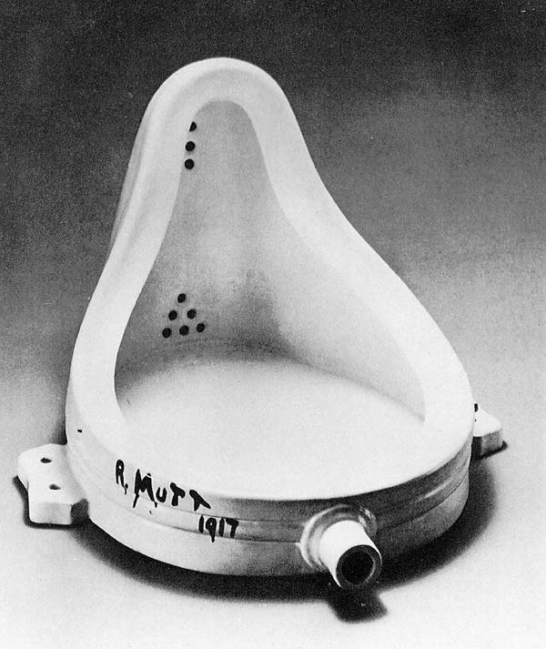

Responder a este comentário
Arte como inutilidade e por que nós precisamos dela assim
por Giba Assis Brasil em 14 de setembro de 2008(intervenção no debate sobre "Arte e globalização", gravado dia 26/01/2001, na sede do Sindicato dos Bancários do RS, para ser difundido por uma rede de emissoras de rádio comunitárias durante o 1º Fórum Social Mundial)
Uma das formas possíveis de se definir arte é como "tudo aquilo que o ser humano faz e que não é diretamente associado àa suas necessidades básicas, de alimentação e abrigo (preservação do indivíduo) e reprodução (preservação da espécie)". Claro que não é este o conceito de arte que está sendo discutido aqui, mas é um conceito possível. Arte seria tudo aquilo que é biologicamente inútil (e, por extensão, fisiologicamente, psicologicamente, economicamente, politicamente inútil) e que, apesar disso, o ser humano faz.
Deste ponto de vista, comer pode ser uma arte, desde que a gente não esteja com fome, desde que o ato de comer seja pura fruição, e portanto inútil. Construir uma casa pra morar pode ser uma arte, desde que o objetivo original de abrigo contra a chuva e o vento, o frio e o calor esteja totalmente diluído na forma da casa, fundamentalmente inútil. Sexo pode ser uma arte (ainda que o papa não entenda assim), desde que a sua função reprodutiva inexista, ou seja totalmente subordinada ao inútil princípio do prazer.
A partir deste conceito, por exemplo, a gente chegaria à conclusão de que aqui, agora, nós estamos conversando sobre um assunto que não tem qualquer relação direta com os nossos instintos de preservação, que nenhum de nós está ganhando dinheiro ou qualquer outra coisa que se possa trocar por alimento ou abrigo, e que eu, pelo menos, não vim pra cá com a mais remota perspectiva de comer alguém (com o devido respeito aos meus colegas de mesa), e que portanto o que a gente está fazendo aqui pode ser qualificado como arte.
Por outro lado, o nosso ouvinte, se é que nós temos nesse momento algum ouvinte, não está numa situação muito diferente. Claro, pode ser que ele ou ela esteja ouvindo esse programa de rádio e ao mesmo tempo se alimentando, se abrigando da chuva ou do calor, ou fazendo algum tipo de trabalho que ele vai trocar por dinheiro pra se alimentar ou se abrigar, ou mesmo que esteja praticando alguma forma de sexo (nesse caso, meus parabéns), com ou sem intenções reprodutivas. De qualquer forma, se ele ou ela está ao mesmo tempo ouvindo isso que a gente está dizendo (e, do contrário, não daria sequer pra considerá-lo um ouvinte), pode-se dizer que pelo menos uma parte da sua atenção está dedicada a uma tarefa completamente inútil. Ou seja: todos os nossos eventuais ouvintes também estão, nesse momento, fazendo arte.
Claro que, quando a gente começa a trabalhar profissionalmente com alguma forma de expressão que pode vir a se chamar de "arte", a gente cria uma relação completamente diferente com essa palavra e seus possíveis conceitos. A arte passa a ser não apenas uma forma de expressão mas também, contraditoriamente, um modo de vida - moeda de troca por alimento, abrigo, sexo - enfim, a arte se torna, em primeiro lugar pra nós, mas em seguida também pro público, uma coisa útil.
E é claro também que, quando alguns de nós começam a analisar e comparar a quantidade absurda de coisas inúteis que o ser humano faz todos os dias, vão necessariamente chegar à conclusão de que só algumas, muito poucas, dessas coisas inúteis merecem de alguma forma ser chamadas de "arte": o teto da Capela Sistina, a nona de Beethoven, os sonetos de Shakespeare, os mantos do Bispo do Rosário. Mais contraditoriamente ainda, a arte passa a ser útil, não apenas pro artista e pro seu público, mas também pra história da humanidade.
E no entanto é da absoluta e primordial inutilidade da arte que brota o nosso interesse por ela, a nossa necessidade dela, como criadores ou comentaristas ou simplesmente como fruidores, desfrutadores de música, dança, desenho, cinema, futebol, sexo, culinária, teatro. Uma idéia difícil de conciliar com as nossas veementes defesas das leis de incentivo ou dos orçamentos da área da cultura. Mas é bom a gente sempre ter isso na cabeça, especialmente quando as coisas se tornam, em reverência ao deus mercado, particularmente utilitárias, e as pessoas que o mercado não consegue ou não precisa ou simplesmente não quer integrar são descartadas como inúteis: não existe nada mais inútil pra vida neste planeta do que a arte; e não há nada mais necessário do que a arte pra que esta vida seja vivida com qualidade.

"A Fonte" (1917), de Marcel Duchamp: inútil!
{kind=link}
TEM MAIS:
Para Oscar Wilde, "toda arte é completamente inútil" (prefácio a "O Retrato de Dorian Grey, 1890).
Para Roger Moreira e o Ultraje a rigor, "a gente não sabemos tomar conta da gente" (1983).
"Desvendando os quadrinhos" (1993), de Scott McCloud, tem uma belíssima observação sobre a inutilidade.